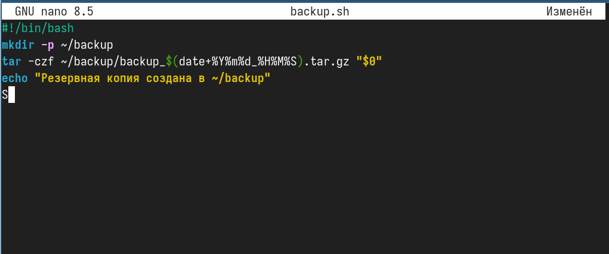
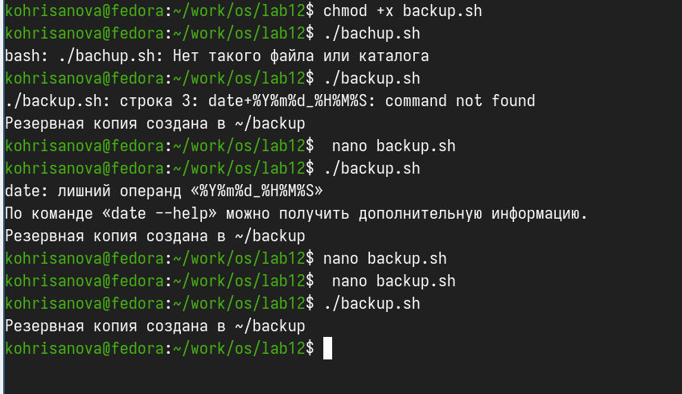
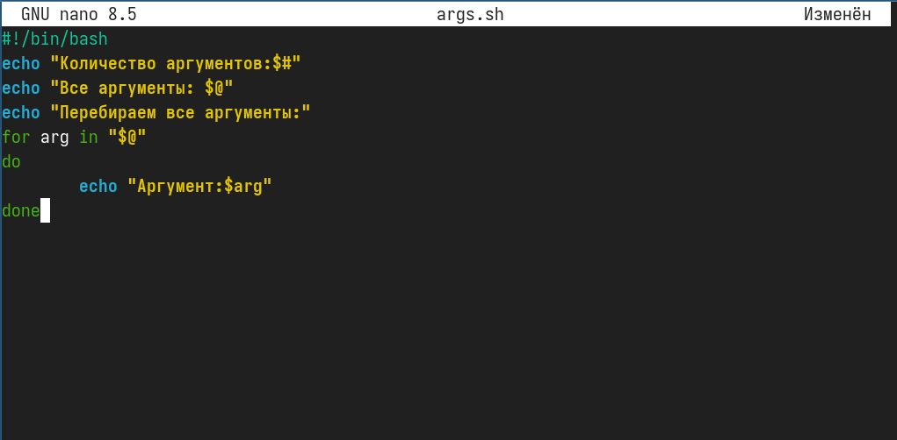
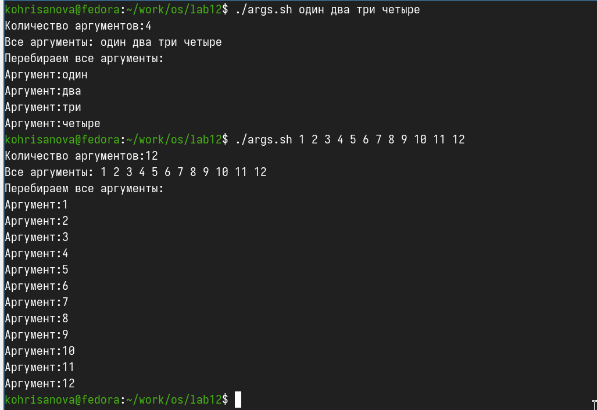
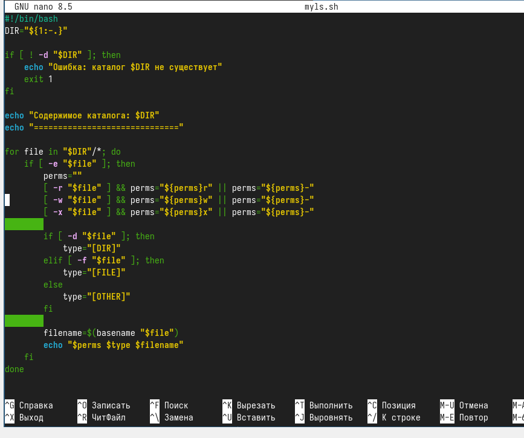
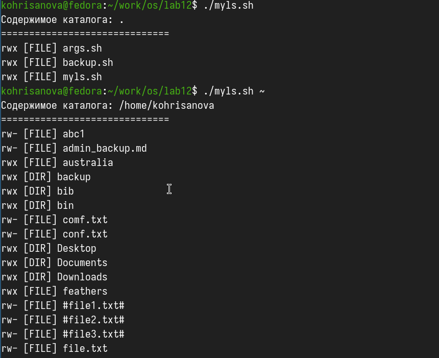
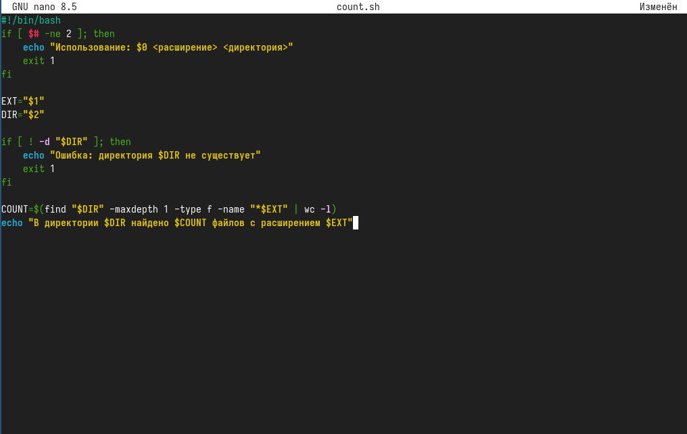
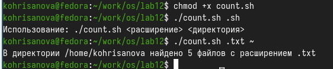

Изучить основы программирования в оболочке ОС UNIX/Linux. Научиться
писать небольшие командные файлы.
Задание
Написать скрипт, который при запуске будет делать резервную копию
самого себя (то есть файла, в котором содержится его исходный код) в
другую директорию backup в вашем домашнем каталоге. При этом файл должен
архивироваться одним из архиваторов на выбор zip, bzip2 или tar. Способ
использования команд архивации необходимо узнать, изучив справку.
Написать пример командного файла, обрабатывающего любое произвольное
число аргументов командной строки, в том числе превышающее десять.
Например, скрипт может последовательно распечатывать значения всех
переданных аргументов.
Написать командный файл — аналог команды ls (без использования самой
этой команды и команды dir). Требуется, чтобы он выдавал информацию о
нужном каталоге и выводил информацию о возможностях доступа к файлам
этого каталога.
Написать командный файл, который получает в качестве аргумента
командной строки формат файла (.txt, .doc, .jpg, .pdf и т.д.) и
вычисляет количество таких файлов в указанной директории. Путь к
директории также передаётся в виде аргумента командной строки.
Выполнение лабораторной
работы
Написала
скрипт, который создаёт резервную копию самого себя

Написание кода
Сделала файл
исполняемым и запустила скрипт

запуск скрипта
Написала
скрипт, обрабатывающий произвольное количество аргументов, в том числе
больше десяти

Написание кода
Сделала
файл исполняемым и запустила скрипт с 4 аргументами и с 12
аргументами

запуск скрипта
Написала
аналог команды ls без использования самой ls и dir

Написание кода
Запускаю
скрипт без аргументов, а потом передаю ему путь к домашнему
каталогу

запуск скрипта
Написала
скрипт, который подсчитывает количество файлов с заданным расширением в
указанной директории

Написание кода
Запускаю
скрипт — считаю количество .sh файлов в текущей директории и читаю
количество .txt файлов в домашней директории

запуск скрипта
Выводы
В данной работе мы изучили основы программирования в оболочке ОС
UNIX/Linux. Научились писать небольшие командные файлы и скрипты на
языке bush.